Formación musical para población en condición de discapacidad
Dentro de la discapacidad, encontramos tres grandes grupos: la discapacidad cognitiva, la discapacidad física y la discapacidad sensorial. Los estudiantes con discapacidad cognitiva poseen una limitación al aplicar un conocimiento o realizar alguna actividad específica de aprendizaje (esta limitación se debe a alteraciones en las funciones mentales o estructuras del sistema nervioso); la discapacidad física presenta una disminución de alguna o varias funciones motoras o físicas; y la discapacidad sensorial se presenta con la pérdida parcial o total de uno o varios sentidos, como por ejemplo el sentido auditivo o el sentido visual.
Sistemas musicales y códigos
A partir de esta comprensión, pensar en sistemas musicales para la población en situación de discapacidad implica ambientes y aprendizajes diversos, partiendo de habilidades y destrezas cognitivas, físicas y sensoriales para abordar el sistema desde su compresión, más no desde la lógica que se da en otros ambientes comunes entre las personas que no tienen discapacidad.
Los sistemas están basados en la notación occidental, con adaptación de repertorios tradicionales de regiones y contextos específicos, relacionados y adecuados a sus habilidades y destrezas interpretativas.
Se parte de funciones rítmicas y melódicas, iniciando con neumas para la comprensión e interpretación de altura, mostrando el sentido o la dirección que debe tener la línea melódica, hasta llegar a la representación gráfica.
La notación musical occidental permite que los niños, los jóvenes y los adultos con discapacidad identifiquen y asocien los sonidos para llegar a la interpretación vocal e instrumental, en procesos de educación musical para población con discapacidad. Los códigos de la notación occidental se adquieren de manera visual, escrita u oral.
Para la discapacidad auditiva se pueden referenciar dos estrategias: la lengua de señas colombiana y la lectura labio facial. Para la discapacidad visual, se realiza desde la musicografía Braille, y en la discapacidad cognitiva y motora, con la asociación del sonido a imágenes y colores hasta llegar al código de notación musical occidental, previo proceso de iniciación musical para el desarrollo corporal, auditivo, vocal, sonoro e instrumental.
Figura 7. Escala
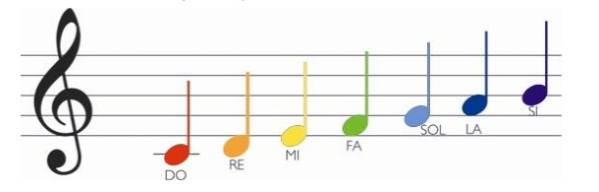Fuente: figura creada por María Cecilia Tamayo para esta publicación.
A continuación se ejemplifican los códigos empleados en las diferentes discapacidades.
Discapacidad cognitiva
Figura 8. Partituras en colores, cifrado
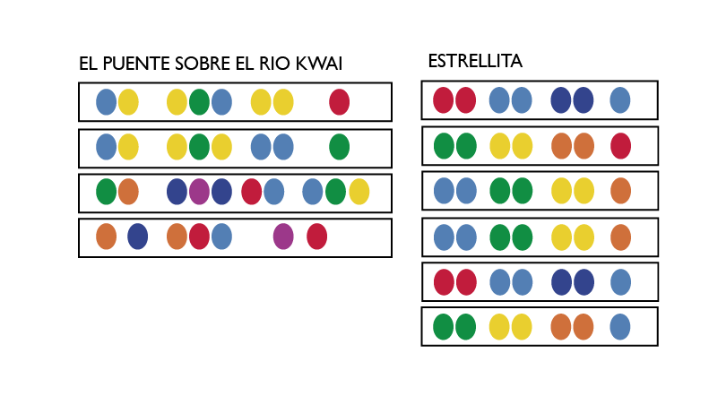Fuente: figura creada por María Cecilia Tamayo para esta publicación.
Figura 9. Ejercicios de audición según altura
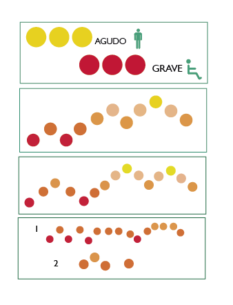Fuente: Una Aventura Musical. Cartilla de iniciación Musical. Agustín Tamayo y María Cecilia Tamayo. (2017). p. 22, 25, 30.
Figura 10. Ejercicios Rítmicos
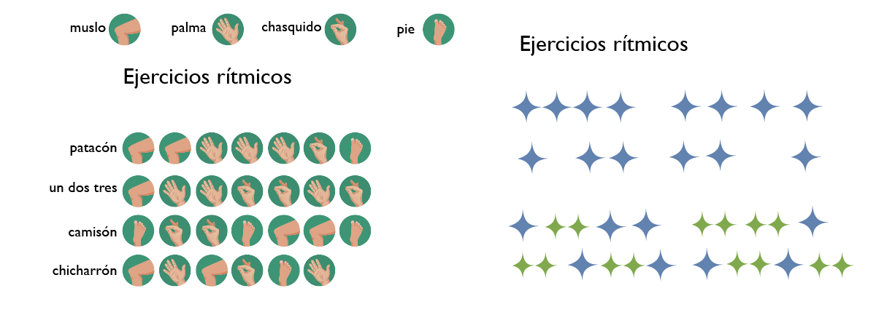Fuente: Una Aventura Musical. Cartilla de iniciación Musical. Agustín Tamayo y María Cecilia Tamayo. (2017). p. 29.
Figura 11. Ejercicios rítmico-corporales
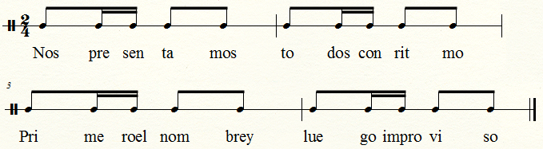Fuente: Una Aventura Musical. Cartilla de iniciación Musical. Agustín Tamayo y María Cecilia Tamayo. (2017). p. 8.
Discapacidad auditiva
Figura 13. Ejercicios rítmicos para discapacidad auditiva
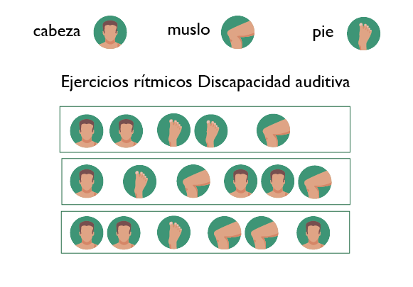Fuente: figura creada por María Cecilia Tamayo para esta publicación.
Figura 14. Ejercicio rítmico corporal
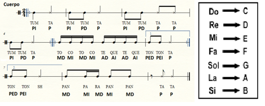Fuente: figura creada por María Cecilia Tamayo para esta publicación.
Figura 15. Alfabeto Manual
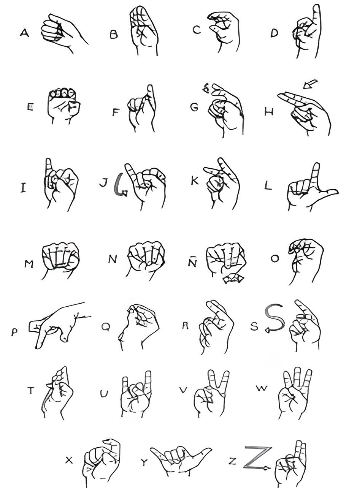Fuente:Diccionario Básico de la Lengua de Señas Colombiana. INSOR (2006).
Discapacidad visual
Para la discapacidad visual es importante tener en cuenta que el sistema musical para las personas con baja visión se puede trabajar directamente con las partituras en tinta, pero si es con problemas visuales severos, o ceguera total, es necesario tener pizarras y manejar directamente el sistema musical de la lectoescritura braille.
Figura 16. Musicografía Braille
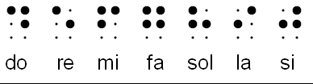Fuente: La musicografía Braille. Un acercamiento a la escritura musical para uso de las personas ciegas. Organización Nacional de Ciegos Españoles - ONCE. (2001)
Figura 17. Notas y figuras en musicografía Braille
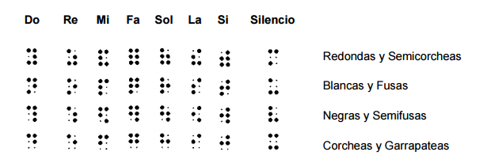Fuente: La musicografía Braille. Un acercamiento a la escritura musical para uso de las personas ciegas. Organización Nacional de Ciegos Españoles - ONCE. (2001)
Figura 18. Compases en musicografía Braille

Fuente: La musicografía Braille. Un acercamiento a la escritura musical para uso de las personas ciegas. Organización Nacional de Ciegos Españoles - ONCE. (2001)
Figura 19. Claves
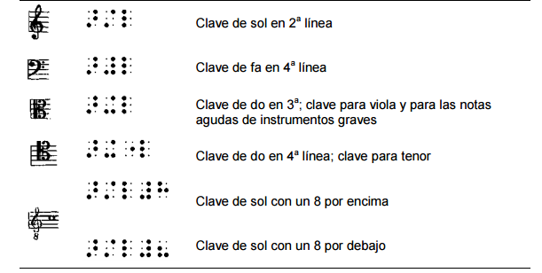Fuente: La musicografía Braille. Un acercamiento a la escritura musical para uso de las personas ciegas. Organización Nacional de Ciegos Españoles - ONCE. (2001)
Figura 20. Alteraciones
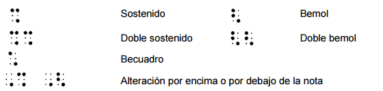Fuente: La musicografía Braille. Un acercamiento a la escritura musical para uso de las personas ciegas. Organización Nacional de Ciegos Españoles - ONCE. (2001)
Figura 21. Partitura ejemplo – Musicografía Braille
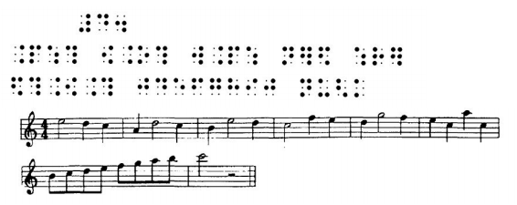Fuente: La musicografía Braille. Un acercamiento a la escritura musical para uso de las personas ciegas. Organización Nacional de Ciegos Españoles - ONCE. (2001)
Medios sonoros
El hombre es altamente dependiente de sus sen¬tidos y la falta de uno de ellos altera todo su equilibrio. La falta de audición, visión u otro de sus sentidos, modifica la conducta de múltiples maneras. Se producen alteraciones en los procesos de evolución y en los procesos de adaptación.
Esto es así porque los sentidos son intermediarios entre las necesidades internas del organismo y del medio ambiente que lo rodea, los cuales se pueden clasificar como receptores a distancia (oído y vista) y receptores de contacto. La visión es direccional y enfoca solamente el área frontal de las personas; la audición se extiende en todas las direcciones y amplía el espectro sonoro.
La audición por ejemplo, es continua aún durante el sueño, funciona ininterrumpidamente manteniendo al individuo en contacto con su medio. La visión, por el contrario, se puede suspender al cerrar los ojos durante el sueño. Estas diferencias, ponen de manifiesto las funciones de exploración y alerta que desempeña el oído. Por esto es que cuando hay una disminución auditiva, es inevitable el cambio en el uso de los demás sentidos y de la organización de las percepciones para que la persona pueda mantener una relación fluida entre sus necesidades internas y las circunstancias ambientales.
Las habilidades perceptuales del niño, principalmente la audición y la visión, le facilitan la diferenciación jerárquica de los numerosos patrones de sonidos que él escucha a través de su desarrollo, así como a producir estos sonidos del lenguaje que le facilitan recordar los patrones de sonidos correspondientes a un significado, lo que conduce a establecer el lenguaje oral. El niño que está aprendiendo a hablar utiliza, mucho más que el adulto, los sensores auditivos para controlar el habla.
La falla en uno de los sentidos altera la integración y funcionamiento de todos los demás. De ahí la importancia del diagnóstico de la persona con discapacidad auditiva, para permitir un manejo clínico y educativo eficaz; mientras más pronto y a más temprana edad se haga este diagnóstico, la intervención será más oportuna y por lo tanto los resultados más satisfactorios.
La ausencia del estímulo sonoro en el niño deficiente auditivo, puede ser reemplazada por una práctica corporal y verbal de ritmos musicales que se pueden expresar con su cuerpo o con su voz. En la clase de rítmica musical, por ejemplo, el niño con discapacidad auditiva aprende a realizar con su cuerpo los ritmos musicales y a reflejar en ellos la vida afectiva. De ese modo los impul¬sos naturales que la coerción social y familiar han trabado, y que acumulan tensión psíquica, se encauzan hacia el exterior en forma de trabajo ordenado.
Es por ello que la falta de un sentido reduce las experien¬cias que se pueden tener del mundo. Priva al organismo de una serie de elementos con los que trabaja la inteligencia, lo que repercute en la ponderación y equilibrio de todo el proceso sicológico y cognitivo.
Textos y poéticas
Para las personas en situación de discapacidad, los textos y poéticas se abordan desde el contexto particular de cada discapacidad. Un texto puede llevar al niño o joven con discapacidad a comprender su lógica particular si es asumido y explicado desde un docente, guía, acompañante o interprete (en este caso de braille, lengua de señas, imágenes o cuentos). Los textos de las músicas populares, músicas urbanas y cantos africanos, permiten una apropiación básica para la población en situación de discapacidad. Los textos y poéticas de la música pop, rock, bolero, coplas, dichos, versos con figuras literarias de fácil pronunciación, onomatopeyas y sílabas que permitan el desarrollo vocal asociado a patrones rítmicos.